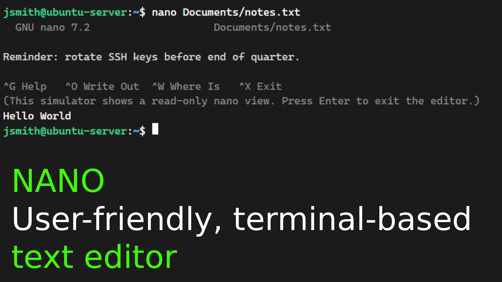
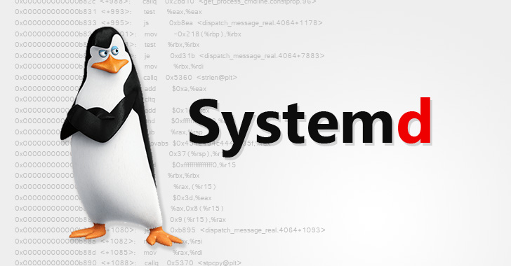

nano
nano Documents/notes.txtUser-friendly, terminal-based text editor commonly used for quick configuration edits without complex modal modes.
Try it in the 1.9 Linux lab — click nano in the command index.
1.92
From nano through the Root Account — editors, /etc files, systemd, kernel, bootloader, and superuser.

User-friendly, terminal-based text editor commonly used for quick configuration edits without complex modal modes.

Local system file storing user account information, including user IDs (UID), group IDs (GID), home directories, and default shells.
The 'x' indicates that the user's password hash is stored in /etc/shadow.

Secured system file accessible only by root that stores encrypted user account passwords and password aging policies.

Static lookup table used to map hostnames directly to IP addresses locally before querying DNS servers.

Filesystem table configuration file that defines static file system mounts, partitions, and options applied at system boot.

System configuration file containing local DNS server addresses and search domain preferences.

Primary system and service manager for modern Linux OSs that initializes user space, boots the OS, and manages system processes.

Core component of the Linux operating system that manages hardware resources, system memory, CPU cycles, and low-level device drivers.
Software program (such as GRUB) that loads the Linux kernel into system memory during the initial boot sequence.
Superuser account on a Linux system possessing unrestricted system privileges and administrative authority.